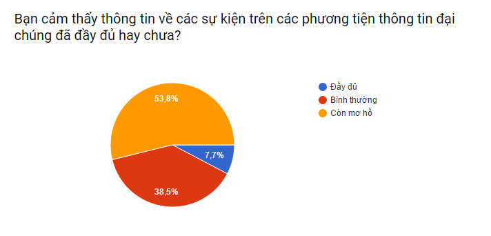

Liệu có giải pháp nào để rút ngắn quy trình???
Sau khi nghiên cứu vấn đề, chúng tôi đề nghị một giải pháp ứng dụng Công nghệ thông tin vào việc hỗ trợ tìm kiếm
bằng phần mềm Event Map chuẩn bị được phát triển để tổng hợp và cung cấp thông tin cho người dùng tiện lợi nhất.

Phần mềm có giao diện như Google Map, nhưng cập nhật những hoạt động giải trí trong tuần,
cùng với đường dẫn đến những trang giới thiệu sự kiện, thông tin hoạt động.
QUY TRÌNH KHI CÓ PHẦN MỀM HỖ TRỢ
Bước 1:
Khởi động chương trình, chọn những loại sự kiện muốn tham dự.
Lúc này hệ thống sẽ lọc những khu vực có tổ chức sự kiện ở khu vực lân cận.
Bước 2:
Điều chỉnh thông tin và lựa chọn đánh dấu những sự kiện quan tâm.
Bước 3:
Quyết định và tìm kiếm các thông tin, phương tiện đến với sự kiện.
QUY TRÌNH KHI CÓ PHẦN MỀM HỖ TRỢ